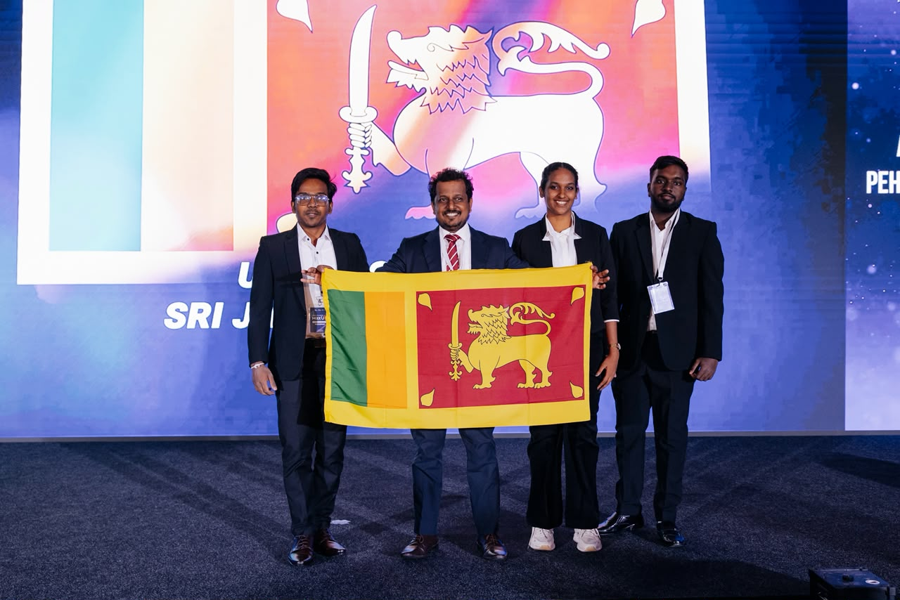

SL → KZ Add photo — save as legathon-photo.jpg
April 2026 · Astana, Kazakhstan
Legathon MaxUp 2026 Global Finals
Represented Sri Lanka at the International Legathon MaxUp 2026 Global Finals alongside teammates Lakindu Induwara and Oshadha Canchana, after the team placed 5th worldwide in the preliminary round. At the Lex Fantastic Stage — a live debate round — the team went head-to-head with Georgia and won, closing out the Global Finals (held 3rd April 2026) in 4th place overall. The trip ran on a full travel scholarship, with visa costs covered by the Faculty Development Fund, and the team was mentored by Dr. Thusitha Abeysekera of the Legal Studies Unit, USJ.
Team Sri Lanka